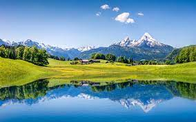

The Alps are the highest and most extensive mountain range system that lies entirely in Europe, stretching approximately 1,200 kilometers (750 miles) across eight Alpine countries: Austria, France, Germany, Italy, Liechtenstein, Monaco, Slovenia, and Switzerland.

The Alps are the youngest and most densely populated mountain range in Europe. They were formed about 65 million years ago.
The mountains were formed as the African and Eurasian tectonic plates collided.
The Alps are generally divided into Western Alps and Eastern Alps, cut along a line between Lake Constance and Lake Como, following the Rhine valley.
The Western Alps are higher, but their central chain is shorter and much curved; they are located in France, Italy and Switzerland.
The Eastern Alps (main ridge elongated and broad) belong to Austria, Germany, Italy, Slovenia and Switzerland.
Mont Blanc, at 4,809 meters (15,777 feet), is the highest peak in the Alps.
Other tall peaks in the Alps include the Dufourspitze, Weisshorn, Finsteraarhorn, and the famous Matterhorn
The Alpine region area contains about a hundred peaks higher than 4,000 meters (13,123 ft), known as the “four-thousanders“.